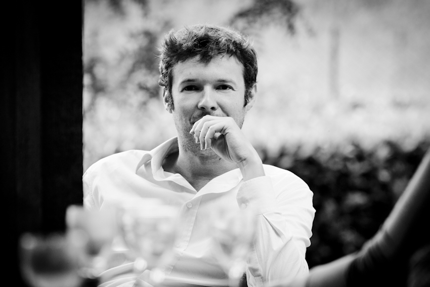

ZEAL
Dear everybody,

I thank you in advance to have the patience for reading all my letter.
Three weeks ago I decide to take an important decision in my life: leave Lottonetwork and withdraw the offer for moving to Madrid.
This was for both private and professional reasons and it was not an easy choice for me because I enjoy so much working in this company.
I had the chance for growing professionally and personally and I want to thanks everybody that I met during this experience.
For sure I want to thanks Hans and Helmut … I had the time for speaking directly with them and I always appreciate the way they
share their happiness with their employers.
Then the Italian Team: Alessandra(before) and Egidio; Donato (before), Alessandro, Simone, Maurizio, Gabriele, Francesco, Luca, Mauro, Giulio e Carla.
The English team: Chris, Julian, Zoe, Soraia, Rebecca, Tom, Michael, Artish, Molly, Colleen and all the other guys.
The MyLotto24 team: Neil, Blerina, Egidio (again? ;) ) and the other ones.
The Spanish team, starting from the People that I met only for a bit: Zurine, Pepe, Raphael, Maria, Javier and the other ones that will share a lot of time with my Italian collegues.
And finally all the German teams: again Donato and Renate plus everyone else.
I feel a little sick saying goodbye to everybody. Good luck to you.
Bye bye
Massimiliano Cattaneo